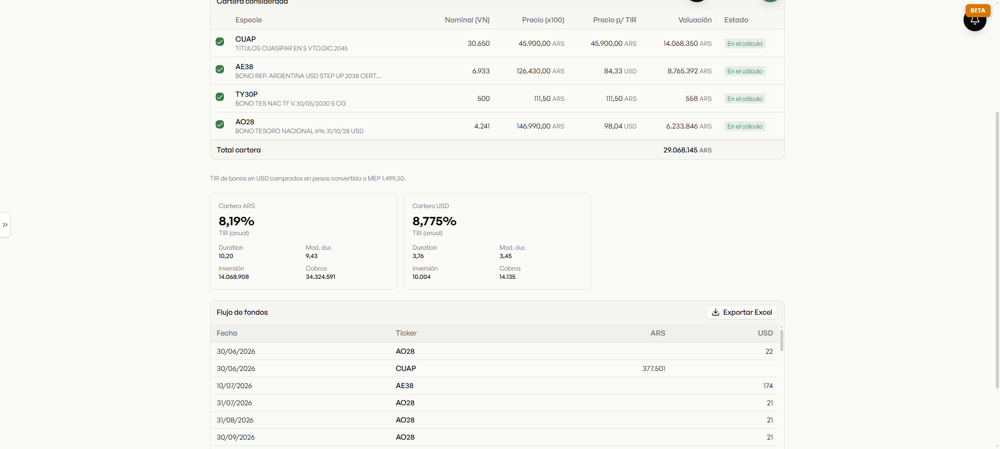
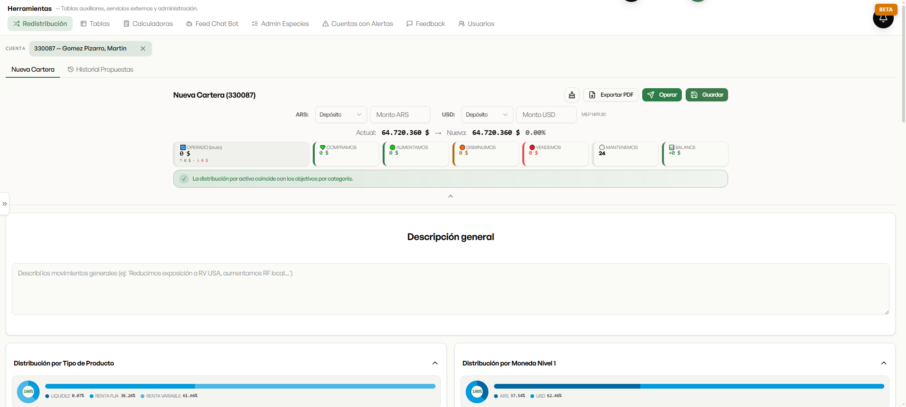
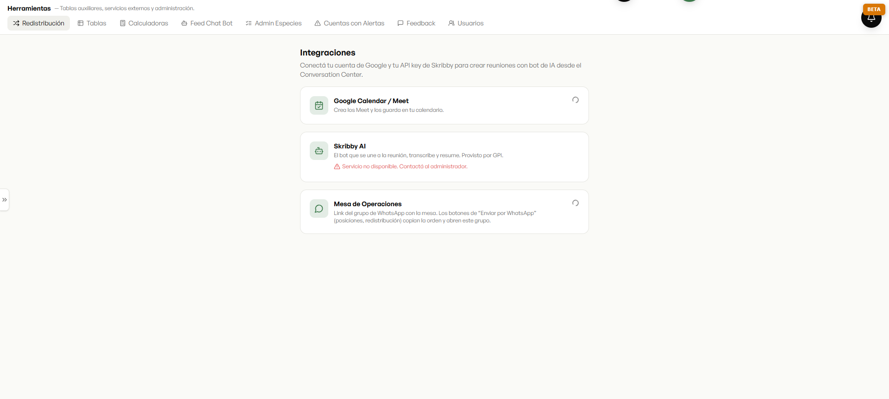
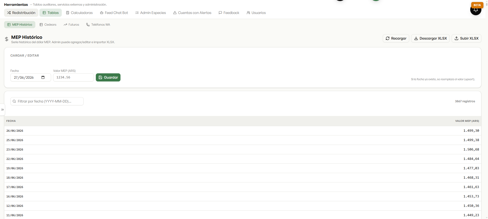

El set de herramientas del día a día: calculadoras de renta fija, redistribución de cartera y todas las conexiones que hacen que la plataforma viva con el resto del trabajo.

Toma la tenencia real del cliente, filtra la renta fija y arma el flujo de fondos + TIR de la cartera — Tasa Interna de Retorno, duration, en pesos y dólares. Sobre datos del cliente, no un ejemplo.

El productor diseña una nueva composición para el cliente — por tipo de activo, moneda, sector o especie —, ve la simulación de qué comprar y vender, y con un botón genera la orden para enviarla por WhatsApp.

Acá se conecta todo lo que hace que la plataforma viva con el resto del trabajo: Google Calendar, el grupo de WhatsApp de la mesa, y el bot de IA que se suma a las reuniones, las transcribe y las resume.

Y las series de referencia que el productor usa todo el día: el MEP histórico (más de 3.800 registros), los Cedears y los futuros — con importación y exportación a Excel.
Del cálculo a la propuesta, de la propuesta al WhatsApp — y todo conectado con la agenda, las reuniones y la mesa. Sin salir de la plataforma.